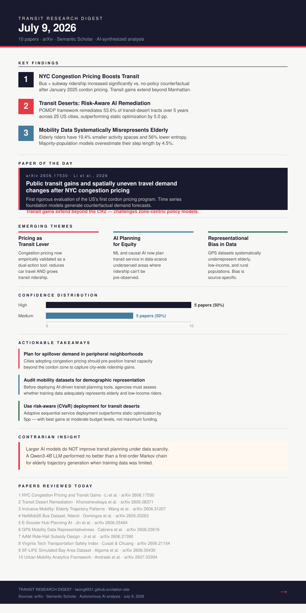

Today's transit research reveals a field in transition: empirical evidence from NYC's landmark congestion pricing program confirms that bold pricing interventions can drive transit ridership upward while reducing overall vehicle demand. Simultaneously, AI-driven planning tools are enabling more equitable service deployment in transit deserts, and new high-fidelity datasets from Brazil and California are expanding the methodological frontier. A recurring theme is the tension between aggregate mobility improvements and spatially uneven distributional effects—particularly for elderly, low-income, and peripheral urban populations.
- Larger AI models do not improve transit planning under data scarcity. A Qwen3-4B LLM performed no better than a simple first-order Markov chain for elderly trajectory generation when training data was limited.
- NYC's congestion pricing transit gains extend beyond Manhattan's Congestion Relief Zone—suggesting that pricing policy has city-wide network effects that traditional zone-based analysis systematically misses.
- Transit desert remediation performs best at moderate budget levels (+9.9pp at baseline), not maximum funding—risk-aware adaptive deployment outperforms full-budget static optimization.

{kind=link}
- Bus and subway ridership increased significantly vs. no-policy counterfactual
- Overall travel demand decreased modestly post-pricing
- Transit gains extend beyond Manhattan's Congestion Relief Zone into outer boroughs
- Socio-demographic analysis reveals uneven neighborhood-level adaptation
- Time series foundation models enable credible counterfactual estimation without clean control groups
- Remediates median 53.6% of transit-desert tracts over 5 years across 25 US cities
- Outperforms static optimization by 5.0pp on average; gains in 16 of 25 cities
- Gains are LARGEST at moderate budget levels (+9.9pp at baseline)
- Robust to 50% prior demand miscalibration
- Population density and existing transit density are strongest cost predictors (R²=0.41)
- Elderly activity spaces: 958m vs 1,189m for young riders (19.4% smaller)
- Mobility entropy: 1.82 vs 4.15 (56% lower)
- Majority-population models overestimate elderly step length by 4.5%
- Qwen3-4B LLM performs no better than first-order Markov chain under data scarcity
- 7.2 million ticketing transactions provide precise stop-level demand measurement
- GPS telemetry enables route-level service reliability analysis
- Weather and sociodemographic overlays enable climate-mobility and equity modeling
- Reproducible preprocessing and anonymization pipeline documented
- Coverage bias varies dramatically between Facebook and Veraset sources
- Rural areas are consistently underrepresented across all platforms
- National-level corrections cannot resolve local-level representational gaps
- 2,478 municipalities analyzed against 2020 Census
- Core demand driven by activity access and transit proximity
- Peripheral demand driven by built form—distinct from core patterns
- City-type templates (large, university, industrial, hilly) require distinct approaches
- Public GBFS data sufficient—no proprietary trip data required
- AAM operators must subsidize ride-hail access at costs exceeding $12/mile
- Distance-based subsidy outperforms flat-rate designs
- Spatial demand heterogeneity drives vertiport location value significantly
- Safety scores updated every 15 minutes using connected-vehicle telemetry
- CRITIC-weighted MCDM integrates SAW, EDAS, and CODAS for robustness
- Robust to parameter perturbations—less than 1-point deviation on 0–100 scale
- Open cloud architecture (FastAPI + PostGIS + Streamlit)
- 3 trillion records at 1Hz frequency—unprecedented public dataset scale
- 500K agents with needs-driven daily agendas over 70 days
- Multi-modal trajectories on OpenStreetMap; fully public and reproducible
- Bus route optimization achievable from mobile data without on-board sensors
- Parking and transit planning unifiable in a single analytics pipeline
- Commercial and public-interest analytics served from same data infrastructure
The convergence of behavioral pricing levers (congestion pricing), AI-assisted planning (transit deserts, e-scooter hubs), and high-resolution simulation datasets (SF-LIFE, NetMob26) is creating the technical infrastructure for a new era of data-driven urban mobility policy. The critical challenge remains: ensuring that AI-optimized systems do not inadvertently reproduce or deepen existing spatial and demographic inequities. The next frontier is integrating disaggregated demographic modeling into core transit planning pipelines—not as an afterthought, but as a foundational design requirement.